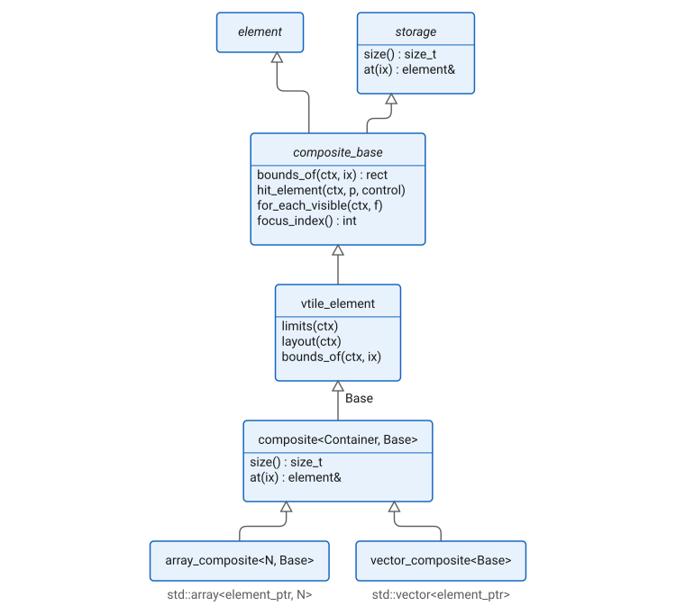
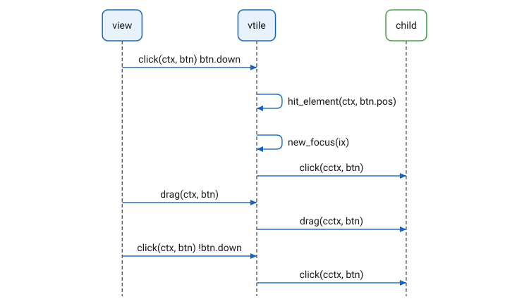

Composites
Overview
A composite is an element with zero or more children: a tile, a grid, a
layer, a flow, a list. The common base of all composites is
composite_base, which derives from element and from storage, the
interface to a sequence of elements by index. composite_base
implements the element protocol over that sequence: it draws each
visible child in a context of the child’s own, routes a click, a drag
or a scroll to the child under the point, moves the keyboard focus among
the children, and reports to each child when the cursor enters and
leaves it. A concrete composite supplies the geometry only: limits,
layout, and bounds_of, which gives the bounds of child ix within
the composite’s own. The rest is inherited.

The storage is supplied by composite<Container, Base>, which derives
from a layout class Base and from a standard container of
element_ptr, and implements size() and at() over the container.
Two aliases cover the common cases. array_composite<N, Base> holds a
std::array, fixed in size at compile time; a factory such as
vtile(a, b, c) produces one. vector_composite<Base> holds a
std::vector, which grows and shrinks, for a composite assembled at run
time. range_composite<Base> is a third form: a view onto a contiguous
part of another storage.
Dispatch
A composite hands each event to one child. For a press it finds the
child under the point with hit_element, gives it the focus if it wants
it, and calls its click in a context of its own; that child then gets
every drag and the release, wherever the pointer has gone:

The cursor is tracked per child: entering when the pointer first lands
on one, hovering while it stays, leaving when it goes, so a child can
highlight itself. key and text go to the focused child; Tab and
Shift-Tab move the focus to the next or previous child that wants it,
and a click on a child that does not want focus takes the focus away.
scroll goes to the child under the point, drops to the child the drag
was last over.
Declaration
namespace cycfi::elements
{
class storage
{
public:
virtual std::size_t size() const = 0;
bool empty() const;
virtual element& at(std::size_t ix) const = 0;
};
class composite_base : public element, public storage
{
public:
// The element protocol, over the children
...
struct hit_info
{
element* element_ptr = nullptr;
element* leaf_element_ptr = nullptr;
rect bounds = rect{};
int index = -1;
};
using for_each_callback =
std::function<bool(element& e, std::size_t ix, rect const& r)>;
virtual rect bounds_of(context const& ctx, std::size_t index) const = 0;
virtual hit_info hit_element(context const& ctx, point p, bool control) const;
virtual void for_each_visible(context const& ctx, for_each_callback f, bool reverse = false) const;
virtual bool reverse_index() const;
int focus_index() const;
void focus(std::size_t index);
virtual void reset();
};
template <concepts::Container Container, concepts::Composite Base>
class composite : public Base, public Container
{
public:
using base_type = Base;
using container_type = Container;
std::size_t size() const override;
element& at(std::size_t ix) const override;
};
template <size_t N, concepts::Composite Base>
using array_composite = composite<std::array<element_ptr, N>, Base>;
template <concepts::Composite Base>
using vector_composite = composite<std::vector<element_ptr>, Base>;
template <concepts::Composite Base>
class range_composite : public Base
{
public:
range_composite(storage& container_, std::size_t first, std::size_t last);
std::size_t size() const override;
element& at(std::size_t ix) const override;
};
}concepts::Composite is satisfied by a type derived from storage,
concepts::Container by one with size(), empty() and operator[]
giving an element_ptr. A composite is both its container and its
base, so r[1] is the element_ptr and r.at(1) the element.
Expressions
Notation
c-
A
composite_base, or a class derived from it. ctx-
A context for
c. ix-
A
std::size_tindex, less thanc.size(). p-
A
pointin view coordinates. f-
A
for_each_callback.
Semantics
| Expression | Semantics |
|---|---|
|
The number of children. |
|
Child |
|
Where child |
|
The child at |
|
Call |
|
The index of the focused child, or |
|
Make child |
|
Forget the focus and the tracked children, as after the children change. |
Example
A composite that stacks its children in rows of equal height. It supplies the geometry; the dispatch of drawing and events to the children is `composite_base’s:
class rows_element : public composite_base
{
public:
view_limits limits(basic_context const& ctx) const override
{
view_limits r{{0, 0}, {full_extent, 0}};
for (std::size_t i = 0; i != size(); ++i)
{
auto l = at(i).limits(ctx);
r.min.x = std::max(r.min.x, l.min.x);
r.min.y += l.min.y;
r.max.y += l.max.y;
}
r.max.y = std::min(r.max.y, full_extent);
return r;
}
void layout(context const& ctx) override
{
for (std::size_t i = 0; i != size(); ++i)
{
context cctx{ctx, &at(i), bounds_of(ctx, i)};
at(i).layout(cctx);
}
}
rect bounds_of(context const& ctx, std::size_t index) const override
{
auto h = ctx.bounds.height() / size();
auto top = ctx.bounds.top + h * index;
return {ctx.bounds.left, top, ctx.bounds.right, top + h};
}
};Its storage, and a factory in the library’s shape:
using rows_composite = vector_composite<rows_element>;
template <concepts::Element... E>
auto rows(E&&... elements)
{
using composite = array_composite<sizeof...(elements), rows_element>;
using container = typename composite::container_type;
composite r{};
r = container{{share(std::forward<E>(elements))...}};
return r;
}
auto three = rows(label("one"), label("two"), label("three"));
rows_composite many;
many.push_back(share(label("more")));Copyright (c) 2014-2026 Joel de Guzman. All rights reserved. Distributed under the MIT License